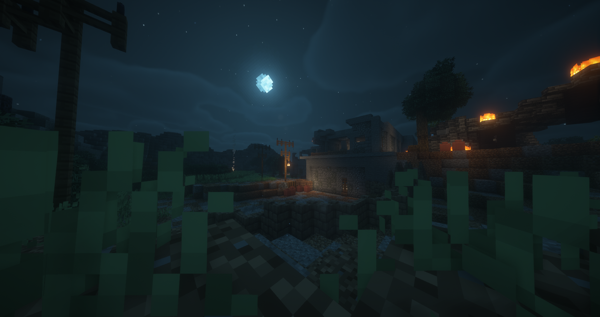
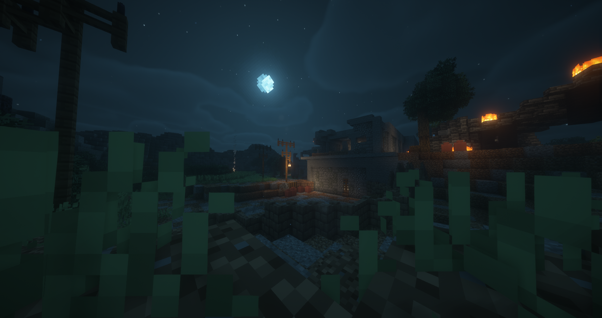

Building for Minehut
Written on Feb 16, 2026, built between Jul-Nov 2024

Disclaimer: I did not build the entirety of a Minehut lobby. I made improvements
and changes to the existing lobby built before me.
During
my time at Minehut, a popular server hosting network, as a moderator, I got the opportunity to make changes to the lobby. (2024's Construction Lobby)
My first addition to the lobby was a meeting room, as you can see above, for the staff team to convene in
during a staff meeting. While building this, I was accompanied by my friends who offered helpful insight -
though the general design is my own. The version you see above is the final version, but it did undergo some
changes.

Above, you can see an earlier version of this meeting room featuring a more simple floor, ceiling and stage. You can actually see this room in use as the moderators are in their chairs (well, some of them, atleast!)
Library


Here's the library I built - a vast improvement over the basic, small, undetailed server room that preceded it.
Above there is also an earlier version of this build showing off the redstone staircase that allows access to
the second
level. This staircase is activated by the mouse (blackstone button) on the desk.
In my opinion, builds
in which the players can interact with something are extremely effective in lobbies like Minehut's because it
really makes exploring the lobby interesting. Interactive builds are great for player retention in the lobbies.
Server Room
 


I replaced the old server room with a much better, improved build in the fancy wooden library above.
The
server room was not removed entirely though—it was moved into an area accessible through a secret painting.
It was repurposed into a server and storage room. In the above image, you can see the storage room section of
the build.
Then in the image above, you can see the servers behind the glass. This is a great improvement over what was
previously there. My intention with this room was to feel like it was intentionally somewhere that was behind
the scenes of everything.
The previous server room featured signs on each observer that obviously showed
what the build was, whereas this version does storytelling by environment and doesn't need such measures.
Administrative Offices


Before the new server room was built, you can see what was in place of it. These were meant to be the old
offices
of Super League Enterprise employees—a reference to the history of Minehut within the lobby. Safe to say, it
doesn't look good and clearly and obviously needed improvement.
There were also even older offices
referencing the original Minehut creators and developers. Though, it didn't
really make much sense as this was a lobby created during the GamerSafer era of Minehut. The reference was cool,
but in practice it didn't make sense. Plus—it was not pleasing to the eyes.
You can also see the brand new offices I built in place of it. To be honest, I still have issues with
the floor and
deepslate brick elements of this room, but I'm much happier with it than the original build.
The second
new image depicts the upper portions of this room. You accessed this room through the previous storage
and server room, as I thought it made sense that the administrative offices would be in close proximity to the
servers.
Hallway


Of course, to get to this area, you needed to go through this hallway. The small, crowded hallway just wouldn't cut it.
In the new version, you can see the rejuvenated version of it. I thought the use of lecterns as the floor was clever, and the hallway now matches the environment of the other rooms way better.
Building Interior


As my goal was to provide life where there was not in the lobbies, I saw this building's exterior and decided to add some interior design just to add more personality to the lobby.
I had so much fun adding these builds to the Minehut lobby and would take the
opportunity again in a heartbeat if it were presented to me, although I think that ship has sailed since I'm no
longer part of the volunteer moderation team.
I was not paid to do this, nor did I expect or ask to be. I
simply loved the community and the experience was surreal. It's an incredible feeling seeing your own build on
production.